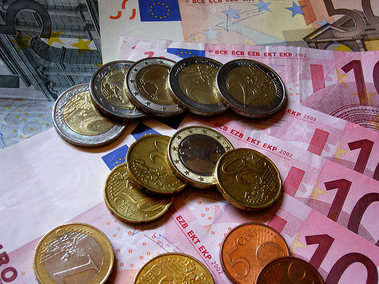

Standardized Currency: Will the Euro Survive?

The Euro was launched in 1999 and is currently the currency of 16 out of 27 Eurozone members (approximately 329 million people). It was designed to make travel around Europe easier, facilitate international trade, and eliminate currency exchange costs. Now, eleven years after its beginning, doubts are being raised about its future.
Though it was intended to boost the economy, many member countries are deep in debt and under pressure to erase it. Normally, when a country is struggling under debt, they attempt to eradicate it with monetary policy. However, in the Eurozone financial measures are the same across all countries, thus making countries experiencing excessive sovereign debt. Without the help of richer Euro nations (mainly Germany) who resent the burden of bailing out irresponsible, gluttonous member countries; Portugal, Italy, Ireland, Greece and Spain are virtually unable to combat the issue.
—Nicole Vulej and Max Carnella
David Watt is a Senior Currency Strategist and Vice President based in Toronto, specializing in the Canadian dollar. David contributes to the daily North American Focus, the weekly Canadian Dollar Pulse and the monthly Currency Report Card. Prior to joining RBC, David spent over 5 years as a Senior Economist focusing on FX and fixed income strategy with another Canadian financial institution. He started his career at the Bank of Canada, and has previously worked at Canada Mortgage and Housing Corporation as a Senior Fixed Income Strategist. David holds a Masters of Economics from Queen's University, where he also undertook advanced graduate studies. He has also completed the Canadian Securities Course, with Honours.
—David Watt, Vice President & Senior Currency Strategist (Foreign Exchange Sales & Trading)
Though it was intended to boost the economy, many member countries are deep in debt and under pressure to erase it. Normally, when a country is struggling under debt, they attempt to eradicate it with monetary policy. However, in the Eurozone financial measures are the same across all countries, thus making countries experiencing excessive sovereign debt. Without the help of richer Euro nations (mainly Germany) who resent the burden of bailing out irresponsible, gluttonous member countries; Portugal, Italy, Ireland, Greece and Spain are virtually unable to combat the issue.
—Nicole Vulej and Max Carnella
—David Watt, Vice President & Senior Currency Strategist (Foreign Exchange Sales & Trading)
NYTimes on Euro Zone
MSNBC on Euro Zone
BNN on Watt
Forex on Watt
Tracking the Dollar
Wells Fargo
Dollar Getting Hammered